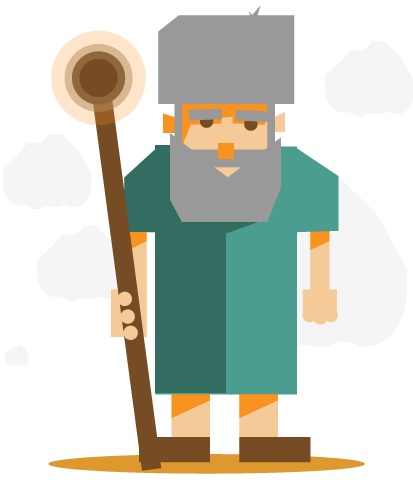

Wer ist Gott
In dieser ersten Lektion befassen wir uns damit, wer Gott ist. Jeder von uns hat seine Vorstellung, jeder hat sein Bild. Dabei gibt es kein Bild, das Gott ganz genau trifft, denn Gott ist für uns Menschen in vielen Belangen schwer fassbar; so hat Gottes Existenz kein Anfang und kein Ende, verändert er sich nie, hat er unumschränkte Macht, ist er überall gegenwärtig und vieles mehr! Und trotzdem: Gott hat sich in der Geschichte immer wieder den Menschen gezeigt. Er zeigt Eigenschaften von sich auf und zwei dieser Eigenschaften werden wir nun genauer unter die Lupe nehmen.
Plant für diese Lektion 50 Minuten ein.
Austauschen
Tauscht zuerst einmal zusammen aus:
linkWas weisst du über den Gott der Bibel?
Wie stellst du dir Gott vor?
Entdecken
Mose? Wer ist das?

Mose war im Alten Testament der Leiter des Volkes Israel. Er hat das Volk im Auftrag von Gott während 40 Jahren von Ägypten nach Israel geführt. Eines Tages, sie waren gerade am Berg Sinai, wo Israel von Gott die 10 Gebote bekam, da äussert Mose einen Wunsch an Gott: ihn selbst zu sehen, in sein Gesicht zu schauen. Gott antwortete ihm.
Lest dazu folgende Bibelstelle:
Toggle Biblequote2. Mose 22, 20-23

linkKrass, noch nie hat jemand Gott gesehen? Warum hat Gott noch niemand gesehen? Weshalb können wir sein Gesicht nicht sehen?